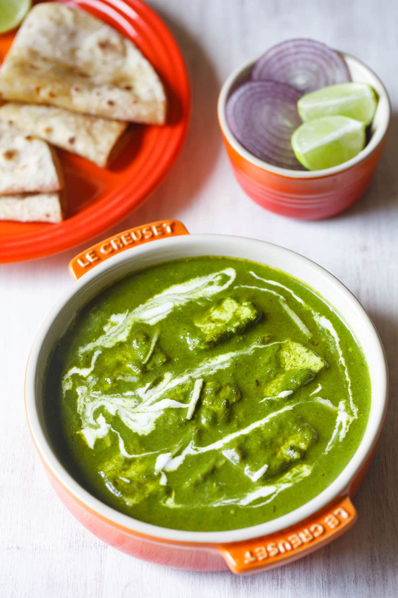

Palak Paneer

Ingredients
- Paneer
- Palak
- chillies
- onions
- Tomatoes
- Ginger Garlic paste
- Cashew
- Masala(Salt, Garam Masala, Kasuri methi, turmeric powder, chilli powder)
- Whole spices(cardamoms, cumin seeds, cinnamon, cloves)
Procedure
- Boil 3 cups water in a pan, microwave or electric heater. Add ¼ teaspoon salt to the hot water and stir.
Then add the spinach leaves to the hot water. Let the spinach leaves sit in the water for about 1 minute.
- Add the spinach in a blender or grinder jar with 1 inch chopped ginger, 1 to 2 garlic cloves and 1 to 2 chili peppers (green chillies).
- Heat 2 tablespoons oil, ghee or butter in a pan. Add ½ teaspoon cumin seeds and let them splutter.And then add all spices with onions, wait till onions turns translucent.
- Now, add ginger garlic paste and tomatoes.Wait until tomatoes soften.Now add all the masala, cook for a while
- Now add the spinach puree that we grinded earlier, add little garam masala. Stir for 2 min with water.
- After that add paneer and cook fro 4 min with lid closed.
Top
Go back to main page